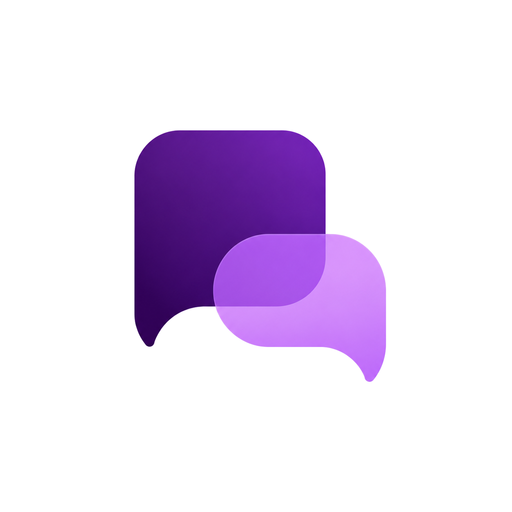

Offthread
Margin notes for Claude, ChatGPT, and Gemini.
Highlight any span in a reply, ask a short question beside it, and leave the main thread alone.
How it works
Three beats. Claude uses your logged-in session; ChatGPT and Gemini need a provider API key of your choice (one key covers both).
-
Highlight
Select a span in a Claude, ChatGPT, or Gemini message. Ask Offthread appears beside the host toolbar (or as a fixed chip).
-
Ask
A bubble opens in the margin with just that excerpt and your question.
-
Stay in the gutter
The answer streams into the bubble. Follow-ups stay there. The main chat never changes.
What stays out of the way
Built for side questions that would otherwise derail the thread.
-
Main thread untouched
Each bubble is its own side conversation. Nothing is posted back into the parent chat.
-
Your keys, your device
Claude rides the session you’re already signed into. ChatGPT and Gemini use an OpenAI or Gemini key you paste in Options — stored only on this device. No Offthread servers.
-
Soft persistence
Margin threads save locally and reappear when you reload or return to a conversation.
Install
Get Offthread from the Chrome Web Store. Options opens on install — add an API key if you’ll use ChatGPT or Gemini, then highlight away.